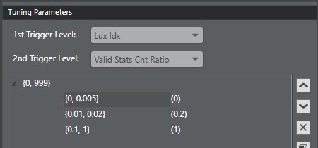

Prerequisite: Before performing any fine tuning, be
sure to run the AWB initial tuning procedure to generate initial parameter values.
Tune or add confidence levels
- Open the project and click the AWB tab.
- In the List View section, select
Advanced Gray World.
- In the Tuning Parameters section,
notice that the first trigger is Lux Idx and the second trigger is Valid Stats
Cnt Ratio.

- In the first column, double-click the {0,0} entry to open the edit dialog.
Update the lux index start and end values and click outside the box to save the
change.
- In the second column, double-click the {0,0} entry to open the edit dialog.
Update the valid stats count ratio start and end values and click outside the
box to save the change.
- In the third column, double-click the {0} entry to open the edit dialog.
Assign a confidence level value to this trigger and click outside the box to
save the change.
- To add more triggers, use the Add above
or Add below buttons to add a new blank trigger row.
Repeat the previous three steps to set the trigger range and associated
confidence level.
- To adjust a trigger range or confidence value, double-click the
appropriate entry to open the edit dialog. Update the values and click outside
the box to save the change.
- Click to save the changes.